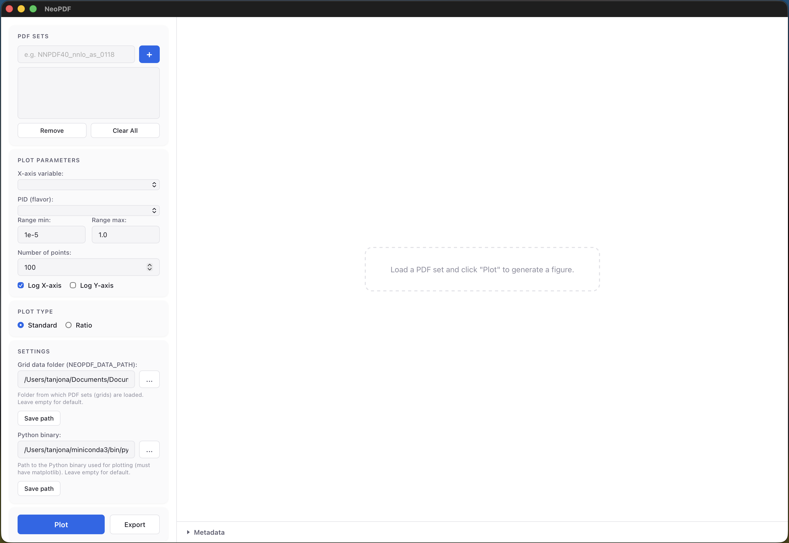

GUI Interface
NeoPDF ships with a cross-platform desktop application built with Tauri
that provides an interactive graphical interface for exploring and plotting PDF sets.

Loading PDF Sets
To load a PDF set, enter the name of the PDF set (e.g. NNPDF40_nnlo_as_0118) in the text
field at the top and click the + button to load it. Multiple sets can be loaded
simultaneously and will appear in the list below. Select one or more sets to compare them
on the same plot.
Use Remove to unload the selected sets or Clear All to start fresh.
Plot Parameters
Once a set is loaded, the GUI automatically detects the active parameter dimensions depending on the type of the distribution:
- x-axis variable — choose which variable to sweep (e.g.
x,Q2,kT, etc.) - PID (flavor) — select the parton flavor to plot (gluon, u, d, s, ...)
- Fixed variables — set constant values for any remaining active dimensions
- Range min / max — define the sweep range for the x-axis variable
- Number of points — control the sampling density
- Log x-axis / Log y-axis — toggle logarithmic scales
Plot Types
The application provides two different types of plots: standard and ratio. The former plots the PDF value (with uncertainty bands) as a function of the chosen variable while the latter divides all sets by a selected reference set, useful for comparing shapes and uncertainties
Click Plot to generate the figure. The plot appears in the right panel as a high-resolution
PNG rendered via matplotlib.
Exporting
Click Export to save the current plot to disk. Supported formats include PNG, PDF, and SVG.
Settings
The Settings section at the bottom of the controls panel lets you configure:
- Grid data folder (
NEOPDF_DATA_PATH) — the directory from which PDF set grids are loaded. Leave empty to use the default location (~/.local/share/neopdf). - Python binary — path to the Python interpreter used for
matplotlibplotting. The Python environment must havematplotlibinstalled. Leave empty to use the system default (python3).
Both settings are persisted across sessions.